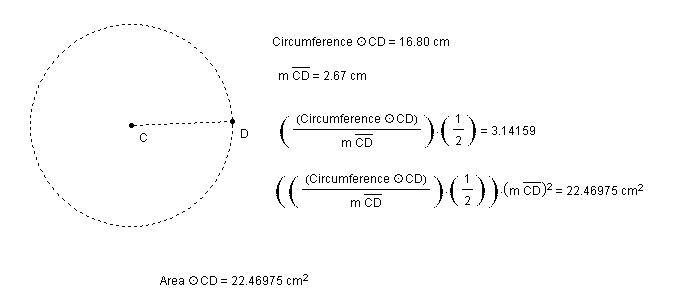
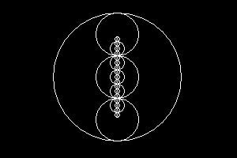
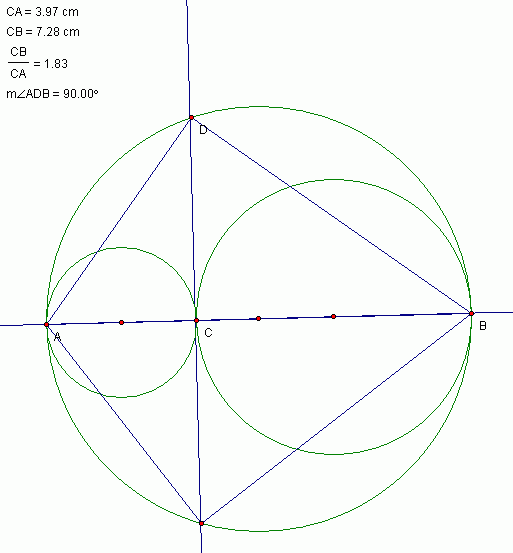
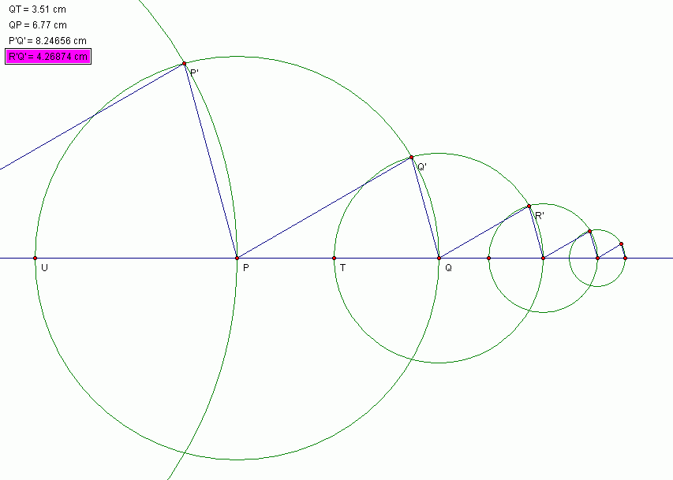
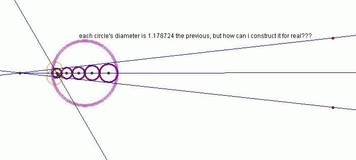
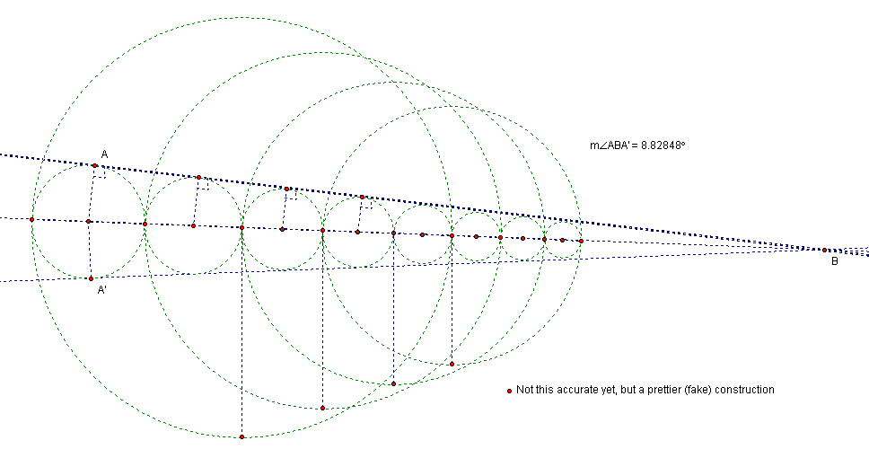
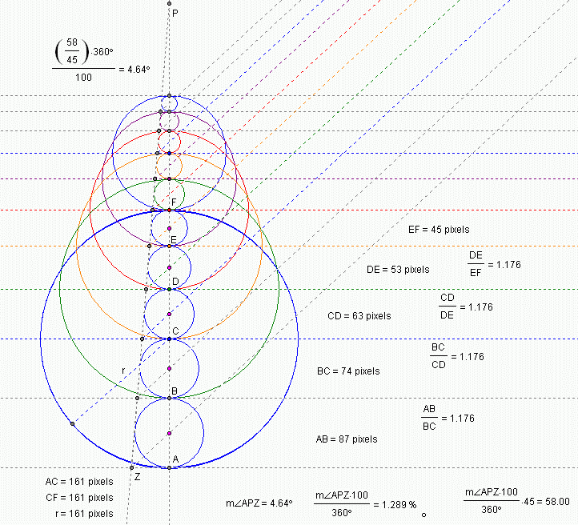

| . : 1 . 1 7 8 7 2 4 1 7 6 1 0 5 2 . . . |
|
R O O T . O B S E S S I O N A L T E R I O R . D E M O T I V E S M O R N I N G . A F T E R A N D . B E Y O N D R E S O . L U T I O N |
©1999-2002
forresto.com
pi construction (simplified) [top]

2002.03.09 - fractal [top]

2002.03.09 - uhm... no [top]

2002.03.09 - pretty wrong, that is [top]

2002.03.10 - brute force fake [top]

2002.03.10 - pretty, but fake [top]

2002.03.15 - created by bisecting angles, not a proof or construction, numbers are only pixel-precise [top]

©1999-2002
forresto.com